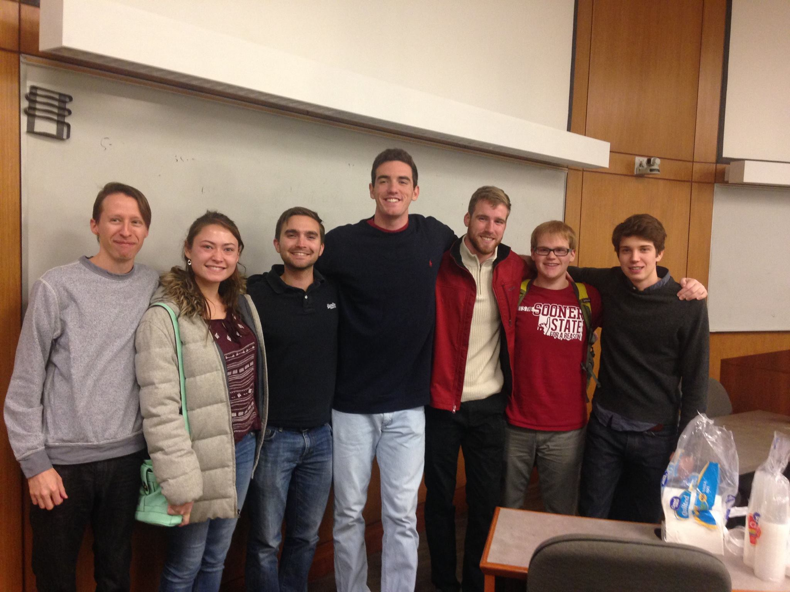
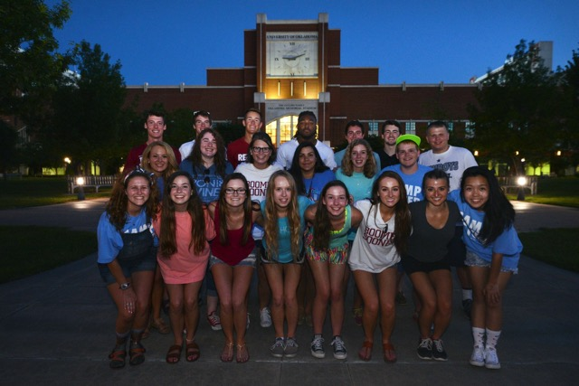
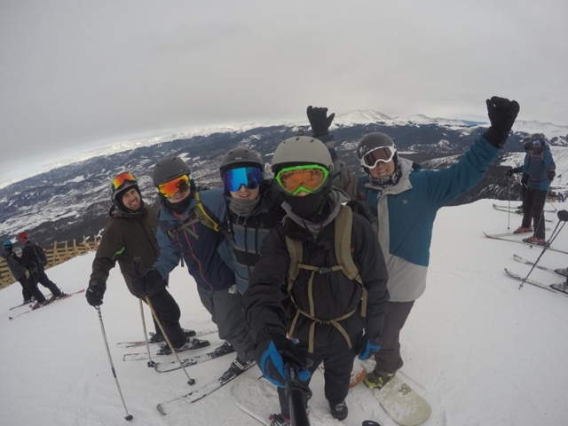

A Little bit about me
Hello, and welcome to my website! My name is Landon dare and I am a software developer. I have created this website in order to serve as an online resource for anyone looking to find out more information about me. Whether you are a friend or future employer, I want to welcome you to my page, and I hope you have a look around!
Education

I am pursing a bachelor’s degree in Computer Science from the College of Engineering, and I am enrolled in the accelerated masters program in the hope of also getting my Masters of Computer Science. I currently maintain a GPA of 3.75, and have been participated in multiple honors research and reading programs. I have also been fortunate enough to take part of our CS department’s research lab on risk and machine learning led by Professor Hougen's where I examined the affects of risk aversion on a population's evolution. My education is very important to me and I have strived to succeed in my academic career.
Computer Science Interview Prep Club
The Computer Science Interview Prep Club is a club created with the express purpose of preparing underclassman for the world of professional interviews. This is an organization of which I am a founding member and current president. I helped start this club in the spring of 2015 by helping the clubs charter get signed, and I have since taken on more responsibility and leadership roles. The club is based around a weekly meeting where we introduce a common technical question topic, try and give a cursory explanation of the topic, and work some common problems of this type. Additionally, we cover other areas of the interview such as behavioral questions and how to best work a career fair. We have also been fortunate enough to have guest speakers from AT&T, Google, Boeing, and several Oklahoma based companies. My involvement started out as a technical advisor who helped picked questions and write solutions, but now I take a presenting role to help better educate my fellow students and underclassmen.
Organizations
I have been fortunate enough to have been apart of several organizations during my time here at the University of Oklahoma. Pictured above is one of my favorite organizations, Camp Crimson. Camp Crimson is a freshman orientation camp designed to welcome new OU Sooners to the college experience, and I volunteer as a small group Lead. I have also been apart of the President’s Community Scholars at the University of Oklahoma, a hand picked group of OU freshman dedicated to community service and volunteerism. I am also an active member of the Beta Upsilon Chi fraternity organization, and I have been a member since my freshman year of college. There are a number of other organizations I have been fortunate enough to have been apart of, but These are my favorite and most dear to my heart.
Hobbies
I have many Hobbies, which I enjoy! Skiing is one of my favorite activities, and I am an avid skier. The image above is of me on my first ski trip to Breckenridge, Colorado in 2014. I love the outdoors and spend much of my time in Oklahoma at my Grandfather’s farm in Guthrie where we like to fish and shoot skeet. I am also known to occasionally enjoy skateboarding with my friends up and down campus.